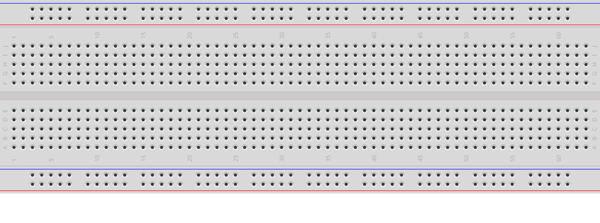

פרויקט #4 • מכונית עוקבת קו
קוראים את הכרטיסייה הזאת לפני הפגישה הראשונה. לא צריך לשנן אותה — משאירים אותה על שולחן העבודה וחוזרים לכל חלק כשנתקעים.
ברדבורד מאפשר לבנות מעגלים חשמליים בלי להלחים. מכניסים את הרגליים של הרכיבים ואת חוטי הג'אמפר לתוך החורים, והלוח מחבר ביניהם בפנים — בלי כלים. בסוף אפשר להוציא הכל ולהשתמש בחלקים שוב.

ברדבורד ריק: למעלה ולמטה — מסילות המתח (+ ו-−); בין לבין — טורים ממוספרים המופרדים במרווח המרכזי. השורות מסומנות a–e בחצי אחד ו-f–j בחצי השני.
+ ● ● ● ● ● ● ● ● ● ● ● red rail (+)
− ● ● ● ● ● ● ● ● ● ● ● blue rail (−)
a ● ● ● ● ● ● ● ● ● ● ●
b ● ● ● ● ● ● ● ● ● ● ●
c ● ● ● ● ● ● ● ● ● ● ● top half
d ● ● ● ● ● ● ● ● ● ● ●
e ● ● ● ● ● ● ● ● ● ● ●
← centre gap
f ● ● ● ● ● ● ● ● ● ● ●
g ● ● ● ● ● ● ● ● ● ● ●
h ● ● ● ● ● ● ● ● ● ● ● bottom half
i ● ● ● ● ● ● ● ● ● ● ●
j ● ● ● ● ● ● ● ● ● ● ●
+ ● ● ● ● ● ● ● ● ● ● ● red rail (+)
− ● ● ● ● ● ● ● ● ● ● ● blue rail (−)
1 2 3 4 5 6 7 8 9 10 …
לכל חיישן קו יש שלוש רגליים מסומנות: VCC, GND ו-OUT. שלושה חוטי ג'אמפר מחברים אותן למקומות קבועים: VCC אל המסילה האדומה (+), GND אל המסילה הכחולה (−), ו-OUT אל חיבור דיגיטלי 11 של הארדואינו או 12.
כלל אצבע: קודם המתח, אחר-כך האות — מחברים VCC ו-GND, ורק אז את OUT. לפני שמדליקים בודקים פעמיים: VCC במסילה האדומה, GND במסילה הכחולה — אף פעם לא הפוך.
כאשר כרטיסיית החיווט R1 של הפרויקט הזה כותבת על כפתור גרסה 3: "רגל A של הכפתור ← (+) ; רגל B ← חיבור דיגיטלי 2 של הארדואינו ; ודרך נגד 10kΩ ← (−)", אלו שרשראות החיבורים שבונים:
[Button leg A] ── wire ── [(+) rail] [Button leg B] ── wire ── [Arduino pin 2] [Button leg B] ── [10 kΩ] ── wire ── [(−) rail]
על הברדבורד, כל חיבור בשרשרת למעלה הוא טור משותף אחד. כך קוראים אותה טור-אחר-טור:
הברדבורד עושה את החיווט בשבילנו — רק בוחרים לאיזה טור או מסילה כל רגל וכל חוט נכנסים.
בדיקה 1 — האם כל חוט נכנס למסילה הנכונה? בפרויקט 4 רוב החיבורים על הברדבורד הולכים אל המסילות. בודקים אחד-אחד: כל חוט של 5V או VCC — במסילה האדומה (+); כל חוט של GND — במסילה הכחולה (−). חוט שנכנס בטעות למסילה הלא-נכונה (או לטור ממוספר במקום למסילה) שובר את החיבור. ואם רכיב יושב על הלוח — כל רגל שלו בטור משלה, אף פעם לא שתי רגליים באותו טור.
בדיקה 2 — האם כל רגל חולקת את הטור שלה עם בדיוק השכן הנכון? עוברים על השרשרת בקול רם. לחיישן הקו: "ה-VCC נכנס למסילה האדומה; ה-GND נכנס למסילה הכחולה; ה-OUT מגיע לחיבור דיגיטלי 11 של הארדואינו או 12". לכפתור של גרסה 3: "רגל A והג'אמפר למסילה האדומה נכנסים לאותו טור; רגל B, הג'אמפר לחיבור דיגיטלי 2 ורגל אחת של הנגד נכנסים לאותו טור; הרגל השנייה של הנגד והג'אמפר למסילה הכחולה נכנסים לאותו טור". אם זוג כלשהו נמצא בטורים שונים — השרשרת שבורה שם. מעבירים את הרגל לטור המתאים.
הכרטיסייה הבאה היא R1 — חיווט פרויקט 4. משאירים את R0 על שולחן העבודה — אם משהו לא עובד בהמשך, שתי הבדיקות למעלה לרוב ימצאו את הבעיה.